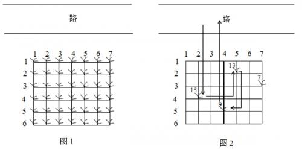

鲁宾逊先生有一只宠物猴，名叫多多。这天，他们两个正沿着乡间小路散步，突然发现路边的告示牌上贴着一张小小的纸条：“欢迎免费品尝我种的花生！――熊字”。
鲁宾逊先生和多多都很开心，因为花生正是他们的最爱。在告示牌背后，路边真的有一块花生田，花生植株整齐地排列成矩形网格（如图1）。有经验的多多一眼就能看出，每棵花生植株下的花生有多少。为了训练多多的算术，鲁宾逊先生说：“你先找出花生最多的植株，去采摘它的花生；然后再找出剩下的植株里花生最多的，去采摘它的花生；依此类推，不过你一定要在我限定的时间内回到路边。”

我们假定多多在每个单位时间内，可以做下列四件事情中的一件：
- 从路边跳到最靠近路边（即第一行）的某棵花生植株；
- 从一棵植株跳到前后左右与之相邻的另一棵植株；
- 采摘一棵植株下的花生；
- 从最靠近路边（即第一行）的某棵花生植株跳回路边。
现在给定一块花生田的大小和花生的分布，请问在限定时间内，多多最多可以采到多少个花生？注意可能只有部分植株下面长有花生，假设这些植株下的花生个数各不相同。
例如在图 2 所示的花生田里，只有位于 $(2,5),(3,7),(4,2),(5,4)$ 的植株下长有花生，个数分别为 $13,7,15,9$。沿着图示的路线，多多在 $21$ 个单位时间内，最多可以采到 $37$ 个花生。
 Comet OJ
Comet OJ